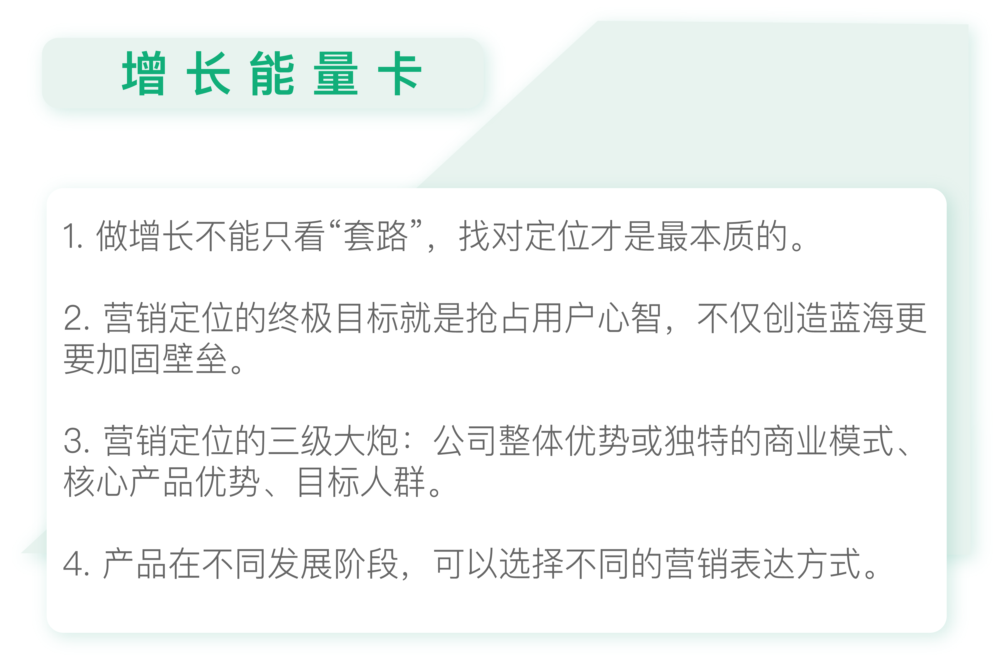

- 00 开篇词 人人都是增长官.md.html
- 01 预习 增长小白如何“弯道超车”？.md.html
- 02 预习 如何理解“增长”？.md.html
- 03 预习 不同职能如何做好增长？.md.html
- 04 预习 做增长如何处理职能间的矛盾？.md.html
- 05 正确目标找不对，天天加班也枉然.md.html
- 06 活学活用北极星指标.md.html
- 07 OKR如何助力增长？.md.html
- 08 不懂用户调研？那就对了！.md.html
- 09 调研目标：在差异性洞察中找到爆破点.md.html
- 10 数据分析：在“花式对比”中发现玄机.md.html
- 11 用户分类：围绕北极星指标细分人群.md.html
- 12 用户访谈：像侦探一样寻找破案线索（上）.md.html
- 13 用户访谈：像侦探一样寻找破案线索（下）.md.html
- 14 提炼用户差异，发现增长契机.md.html
- 15 挖掘产品优势，打破增长瓶颈.md.html
- 16 定位营销差异，抢占用户心智.md.html
- 17 一级方向：找到增长爆破点.md.html
- 18 B端产品如何调研？.md.html
- 19 全局规划增长机会.md.html
- 20 统筹全局的用户增长地图.md.html
- 21 案例解析：定义关键增长指标.md.html
- 22 正负双向洞察，找准切入点.md.html
- 23 二级机会：制定增长策略.md.html
- 24 为一家濒临破产的公司制定增长策略（上）.md.html
- 25 为一家濒临破产的公司制定增长策略（中）.md.html
- 26 为一家濒临破产的公司制定增长策略（下）.md.html
- 27 为什么指标数据怎么优化都不提升？.md.html
- 28 案例解析：打造增长闭环（上）.md.html
- 29 案例解析：打造增长闭环（下）.md.html
- 30 案例解析：唤醒沉睡用户（上）.md.html
- 31 案例解析：唤醒沉睡用户（下）.md.html
- 32 没有分解，就无缘增长.md.html
- 33 四个要点颠覆传统需求文档.md.html
- 34 三级落地：无限场景应用.md.html
- 35 手把手教你设计一次成功的实验（上）.md.html
- 36 手把手教你设计一次成功的实验（下）.md.html
- 37 积少可成多，别针换别墅.md.html
- 38 四级延续：增长组件库案例.md.html
- 39 以用户为中心增长.md.html
- 增长导航图 增长专栏的知识架构是怎样的？.md.html
- 尾声 结束意味着新的开始.md.html
- 预习答疑 你需要一张思维导图吗？.md.html
- 捐赠
16 定位营销差异，抢占用户心智
你好，我是刘津。
在上一讲我们了解了如何找到产品的最长板，这就是定位的基础。
定位对于企业来说至关重要，它找到用户心智中暂时空白的领域切入进去，创造一片蓝海。
我发现很多拼命加班的公司业绩不一定很好；很多业绩好的公司，员工反而比较轻松。
因为增长的本质是“四两拨千斤”、是一种“巧劲儿”，第一个找到蓝海的人躺着也能赚钱。反之，你杀入一片红海，累到半死最后也是举步维艰。
所以，与其努力拼搏，不如找对方向，而这里的方向也就是在说定位。
营销定位的三级大炮
如何找到定位呢？
光有产品优势是不够的，还要结合公司综合实力踩中竞争对手的软肋，并把它宣传出去抢占用户心智。
定位不仅能打造蓝海，更能够加固竞争壁垒。
下面举几个例子。
超出产品范围看优势
我有个朋友做政企类的产品，他非常尴尬地说，他们唯一的优势是有政府关系背景，产品没优势；- 有个朋友在做教育类产品，他们在该细分领域已经是第一了，却认为和竞品比功能都差不多，没什么优势；- 还有个朋友做大众消费类产品，总说产品品质一般，也觉得自己没优势……
可真的是这样吗？
实际上，对政企类产品来说，有政府关系就是最大的优势；对教育类产品来说，目前已经排名第一就是最大的优势；对大众消费类产品来说，渠道广、容易购买是他们巨大的优势。
综合优势和上一讲提到的产品长板之间必然存在联系。
比如，前面提到的宜人贷对于二三线城市额度更高，是因为本身的风控能力强。这和公司成立早实力背景雄厚有关系。但在调研之前，如果只看功能和体验的话，确实会觉得没有什么优势。
所以在找优势这方面，不仅要看产品本身的优势，更要看广义的竞争优势，也就是公司整体实力，并且找到两者之间的关联。这样你才能确保找到的优势是优先级最高的核心优势。
“碰瓷”对手凸显优势
另外，不同的人有不同的喜好和观点。
你的优点在某人看来可能是缺点，而你的缺点在另一个人眼里可能反而是优点。所以没有绝对的优点或者缺点，而是看你如何巧妙地利用。
比如，天猫的优点是商品多，价格便宜，这是平台模式天然的优势；但是相应地，产品品质和物流体验都不在自己的把控范围内，这又变成了它的劣势。
作为追赶者的京东，如果比拼商品数量和价格，那显然不是天猫的对手，因为这正是自营模式的缺陷。但相应地，自营模式保证了产品品质和快递速度。
因此京东在宣传上扬长避短，突出产品品质和送货速度，并在此基础上“踩”竞争对手的劣势。比如，“买点好的”“不走猫步”“别人叫你亲，不如质量精”等等，都是这个套路。
这样通过对比就进一步凸显了自己的优势。
再比如可口可乐是老牌产品，新的百事可乐该如何超越呢？
老牌产品的优势是经典、深入人心；但对应的缺点也很明显，就是不够新潮。所以百事可乐顺势用一句广告语“百事可乐，新一代的选择”成功占据市场，和可口可乐分庭抗礼。
所以在营销中，不要和竞争对手正面较量，而是拿自己的优势去对应它的软肋，笼络和它完全不同的一批新用户，抢占空缺市场。
综上我们可以看到，营销定位的基础有三点：
- 公司整体优势或独特的商业模式；
- 二是在此基础上发展出的核心产品优势；
- 三是对应的目标群体。
如果你能找到这三者，逻辑也说的通，那你的营销定位模型就有了。
下图用炮弹的样子形象的描绘了这个模型。
比如宜人贷的营销定位三级大炮：炮身是行业领军企业、雄厚的风控实力；炮弹是额度高；炮弹最易击中的人群是二线城市用户。
事实上，很多老板或者高管比较清楚炮身，但是却搞错了炮弹或目标，因为他们平时一般不会接触到执行细节。而一线的工作人员虽然经常接触炮弹和目标，但由于对炮身了解的不够深入，可能选择了并不匹配的炮弹。
拿宜人贷来说，一开始老板期望面向的用户是一二线城市的白领，而通过长时间的运营，实际用户却和预期的有所偏离。
与此同时，一线的运营人员认为放款快和额度高、平台靠谱等都是我们的优势，摸不准哪个才是最长板的优势。在这种情况下去做营销，力量注定是分散的，难以产生最好的效果。
这就是我们前面需要花这么多时间和精力去做用户调研的原因，就是为了找到最合适的炮身、炮弹、目标组合，形成强有力的增长基础。
帮产品找到“最佳人设”
找到营销定位三级大炮，算是组装出了增长的底座。接下来我们需要在它的基础上盖上华丽的幕布，把它巧妙包装成讨巧的“人设”。
说起“人设”大家都不会陌生。
我听过一个朋友抱怨：为什么我的朋友圈点赞的人这么少？另一个朋友说：因为你没有“人设”。
的确，没有“人设”的人，别人是记不住你的。这对个人、对明星、对产品来说都是这样。
现在的当红明星，大多都有很固定的“人设”，比如“老干部”“吃货”“好爸爸”“少女感”等等。很多年纪大的人记不住明星的名字，但是只要一提起来就会说：“哦，我知道，是不是那个特别能吃还长不胖的姑娘？”
看，有了“人设”，是不是大家就更容易记住你了？这不就是营销的目的吗？
那么怎么帮自己的产品找到“最佳人设”呢？
一方面，我们需要结合产品核心优势与目标群体的关注点；另一方面，我们也需要了解产品目前处在什么样的发展阶段，用什么样的表达方式最合适。
可以参考下图的营销4F模型。
一般来说，当用户对一种产品模式还不够熟悉的时候，从“事实”角度去宣传比较好，比如“在线一对一英语教学”。
当用户对产品已经很熟悉，但是不知道你和竞品的差异时，从“功能”角度宣传比较好，比如“充电5分钟，通话2小时”。
当你的产品已经基本在市场上站稳脚跟，你可以从情感角度打动用户，比如“照亮你的美”。
当你的产品已经处于垄断地位，或是做企业内部宣传时，可以从概念的角度宣传，比如“用心引领”一类的宣传语。
拿宜人贷举例：
- 从事实角度看，我们的核心优势是可以提供用户更高的额度帮助他筹到足够的钱；
- 从功能角度看，我们更专业、更便捷；
- 从情感角度看，我们的用户在意家人、渴望自由、充满梦想；
- 从概念的角度看，所有这一切都是为了爱……
显而易见，就当前的阶段来看，从事实层面宣传是最合适的。
因为专业、便捷听起来不够有差异，让人记不住；情感角度宣传让人感觉太虚。而额度高听起来让人眼前一亮，既和北极星指标相关，又能够占领市场空缺位置，所以它是一个合适的宣传点。
用户调研知识地图
- 根据今天的专栏内容用户调研知识地图又添加了新支点。

思考题
你目前负责的产品的营销三级大炮是什么？你认为当前阶段最合适的宣传表达方式是什么呢？
欢迎把你的思考和疑问通过留言分享出来，与我和其他同学一起讨论。
如果你觉得有所收获，也欢迎把文章分享给你的朋友。
© 2019 - 2023 Liangliang Lee. Powered by gin and hexo-theme-book.